Soru 1Cevap: E
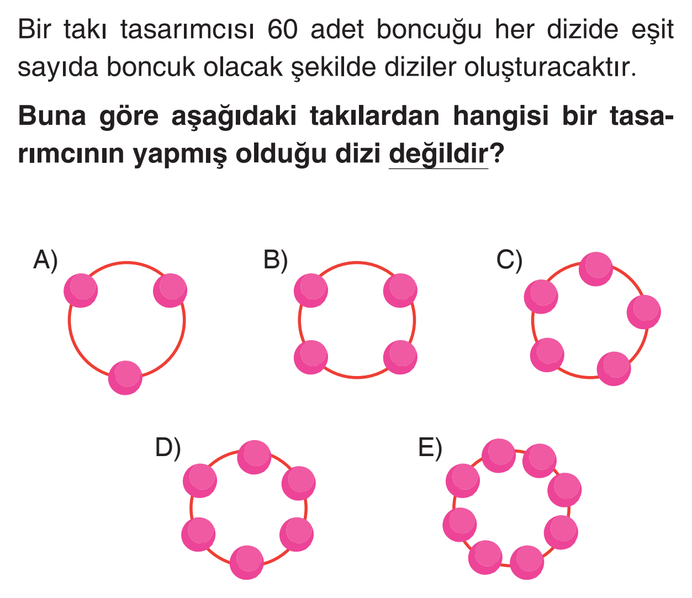
Çözüm
- Dizideki boncuk sayısı 60'ı bölmelidir.
- Şekillerdeki boncuk sayılarından yalnız E'deki 60'ın böleni değil.
- → E.
Cevap: E
Soru 2Cevap: E
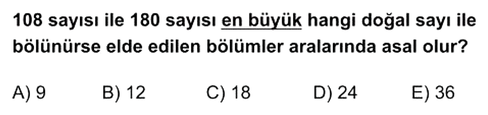
Çözüm
- Bölümler aralarında asal ise bölen sayı EBOB'dur.
- $\text{EBOB}(108,180)=36$.
- $\frac{108}{36}=3$, $\frac{180}{36}=5$ ✓ → E.
Cevap: E
Soru 3Cevap: B
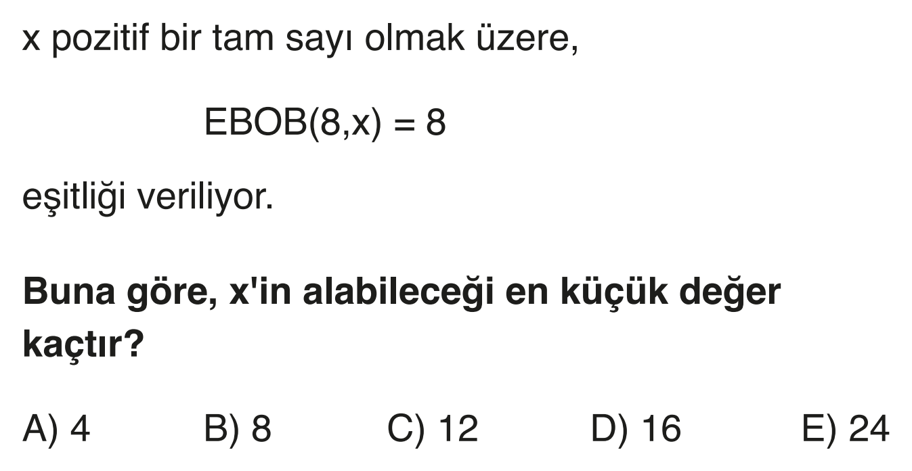
Çözüm
- $\text{EBOB}(8,x)=8 \Rightarrow 8\mid x$.
- En küçük pozitif $x=8$.
- → B.
Cevap: B
Soru 4Cevap: C
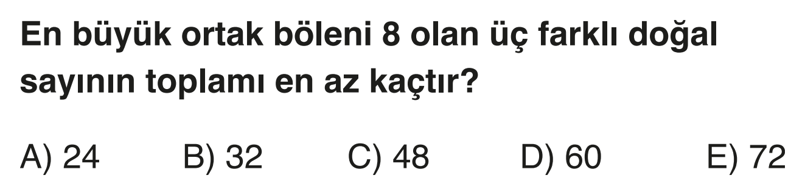
Çözüm
- Sayılar $8a$, $8b$, $8c$; $a,b,c$ farklı, ortak böleni 1.
- En küçük $1,2,3$ → $8+16+24$.
- $48$ → C.
Cevap: C
Soru 5Cevap: E
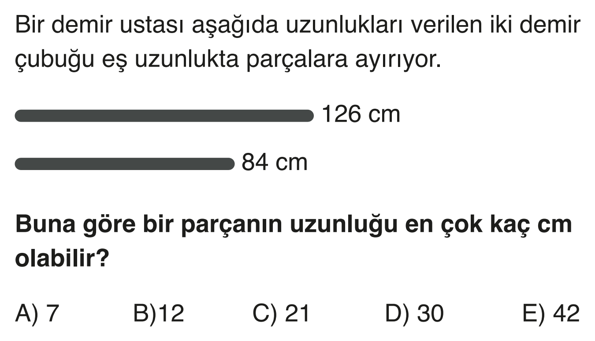
Çözüm
- Parça uzunluğu her iki çubuğu bölmeli.
- En büyük: $\text{EBOB}(126,84)$.
- $42$ cm → E.
Cevap: E
Soru 6Cevap: C
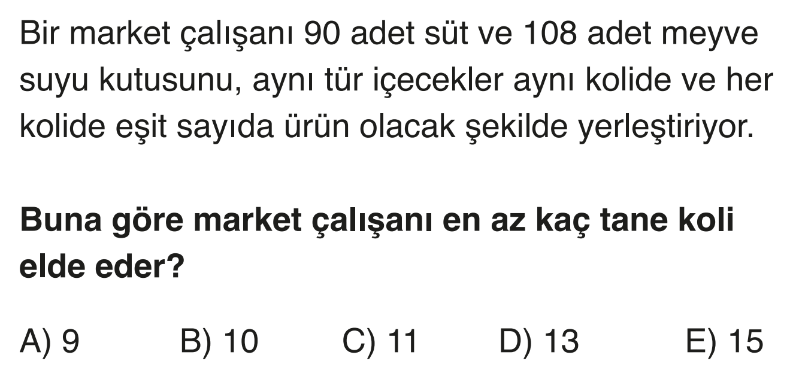
Çözüm
- Kolideki ürün sayısı $\text{EBOB}(90,108)=18$.
- Koliler $5+6$.
- $11$ → C.
Cevap: C
Soru 7Cevap: D
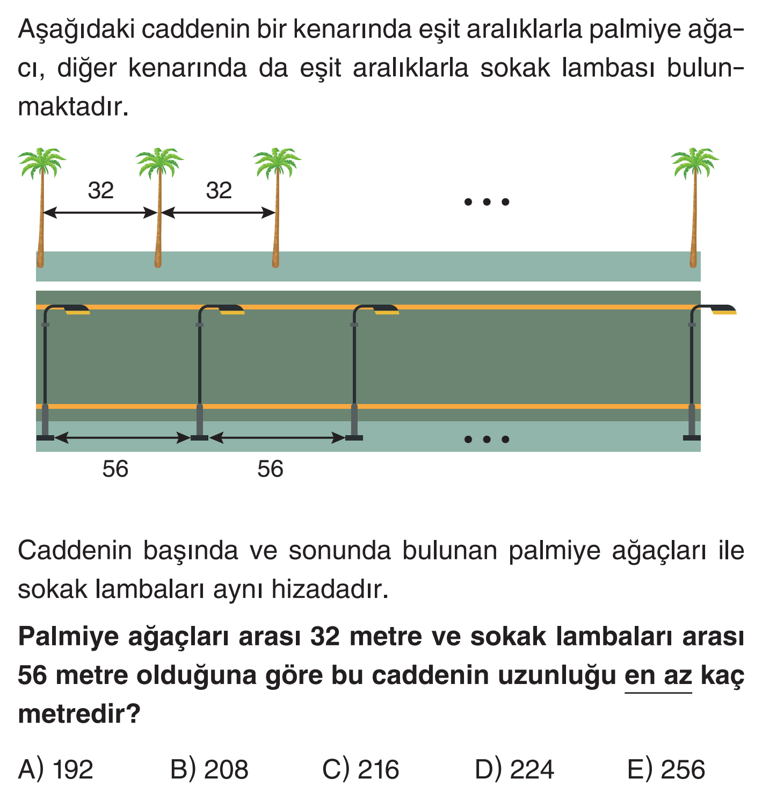
Çözüm
- Cadde uzunluğu 32'nin ve 56'nın katı.
- En az $\text{EKOK}(32,56)$.
- $224$ m → D.
Cevap: D
Soru 8Cevap: D
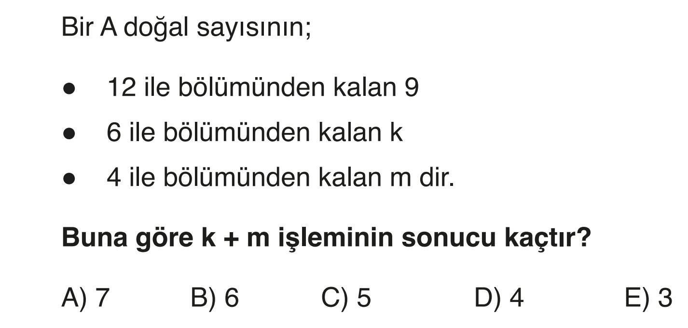
Çözüm
- 12'ye bölümden kalan 9; 6 ve 4, 12'nin bölenleri.
- $9$'un 6 ile kalanı $k=3$, 4 ile kalanı $m=1$.
- $k+m=4$ → D.
Cevap: D
Soru 9Cevap: A
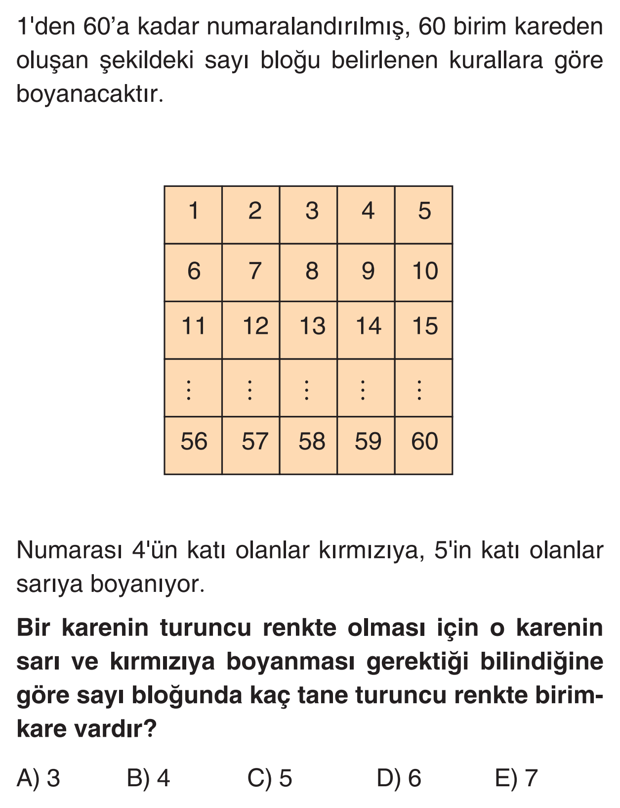
Çözüm
- Turuncu = hem kırmızı (4'ün katı) hem sarı (5'in katı).
- 4 ve 5 aralarında asal → 20'nin katları.
- 60'a kadar $20,40,60$ → 3 → A.
Cevap: A
Soru 10Cevap: D
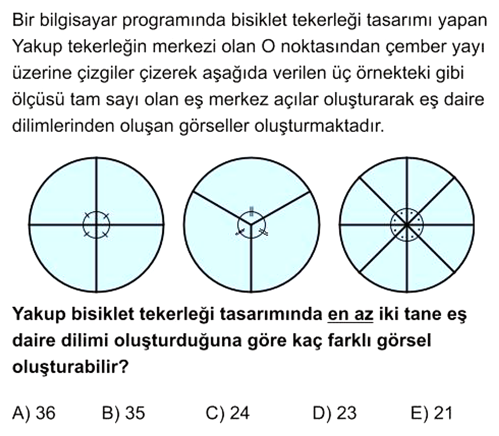
Çözüm
- $n$ eş dilim → merkez açı $\frac{360}n$ tam sayı → $n\mid360$.
- 360'ın 24 pozitif böleni var.
- En az iki dilim: $n=1$ çıkar → 23 → D.
Cevap: D
Soru 11Cevap: D
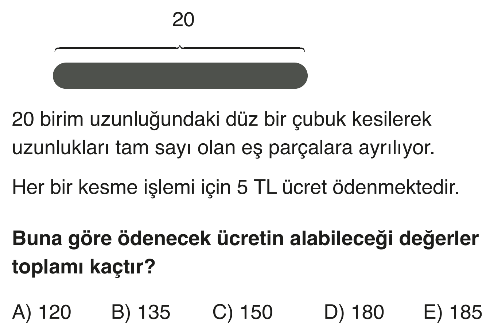
Çözüm
- Parça sayısı $n$, 20'nin böleni; kesim sayısı $n-1$.
- $n\in\{1,2,4,5,10,20\}$ → kesimler $0,1,3,4,9,19$ → toplam 36.
- Ücretler toplamı $5\cdot36=180$ → D.
Cevap: D
Soru 12Cevap: C
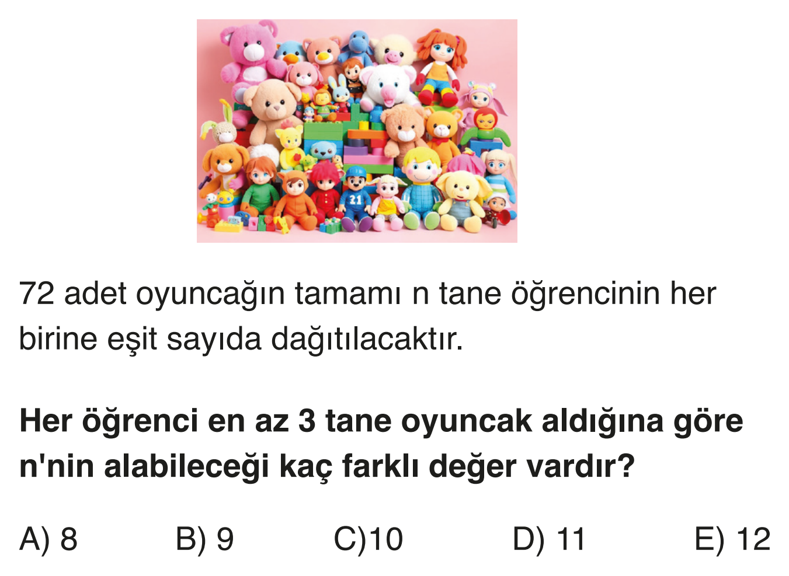
Çözüm
- $n\mid72$ ve her öğrenciye $\frac{72}n\ge3$ → $n\le24$.
- 72'nin 24'ten büyük olmayan bölenleri: $1,2,3,4,6,8,9,12,18,24$.
- 10 değer → C.
Cevap: C
Soru 13Cevap: E
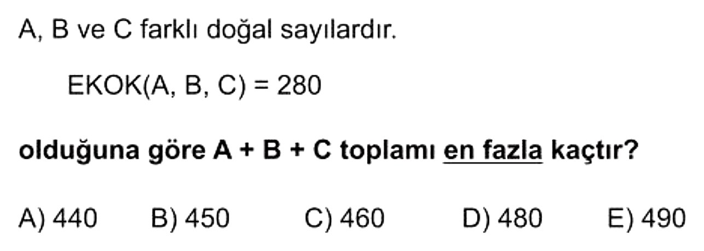
Çözüm
- Sayılar 280'in farklı bölenleri; toplam en büyük için en büyük bölenler.
- $280$, $140$, $70$ ($\text{EKOK}=280$ ✓).
- $490$ → E.
Cevap: E
Soru 14Cevap: E
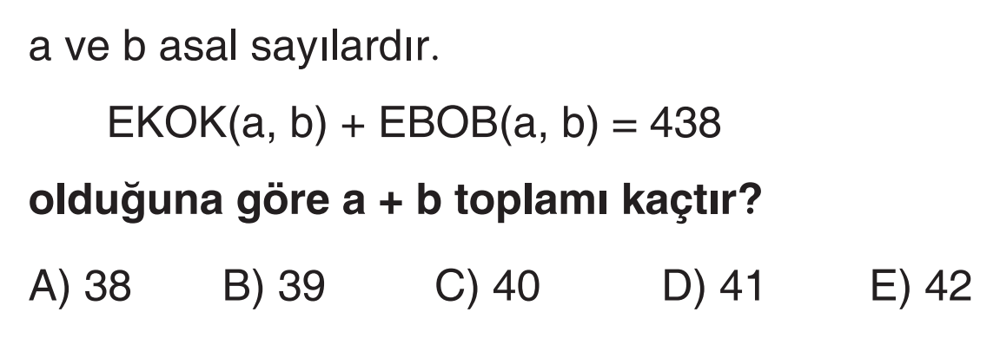
Çözüm
- $a\ne b$ asal: $ab+1=438 \Rightarrow ab=437=19\cdot23$.
- ($a=b$ ise $2a=438$, $219$ asal değil.)
- $a+b=42$ → E.
Cevap: E
Soru 15Cevap: A
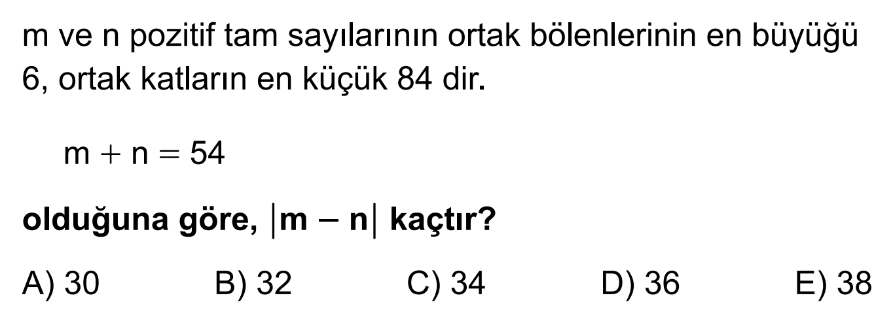
Çözüm
- $m=6p$, $n=6q$, $p,q$ aralarında asal, $6pq=84 \Rightarrow pq=14$.
- $6(p+q)=54 \Rightarrow p+q=9$ → $\{2,7\}$.
- $|m-n|=6\cdot5=30$ → A.
Cevap: A
Soru 16Cevap: C
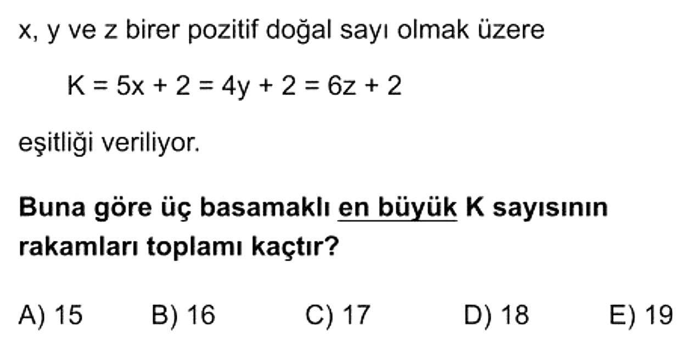
Çözüm
- $K-2$, 5, 4 ve 6'nın ortak katı → 60'ın katı.
- En büyük üç basamaklı $K=60\cdot16+2=962$.
- $9+6+2=17$ → C.
Cevap: C
Soru 17Cevap: B
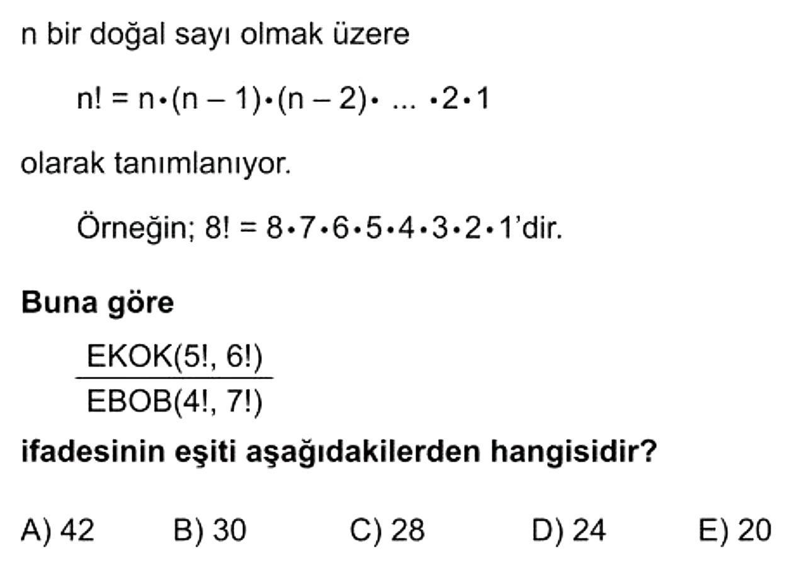
Çözüm
- $\text{EKOK}(5!,6!)=6!=720$ (6! 5!'in katı).
- $\text{EBOB}(4!,7!)=4!=24$.
- $\frac{720}{24}=30$ → B.
Cevap: B
Soru 18Cevap: A
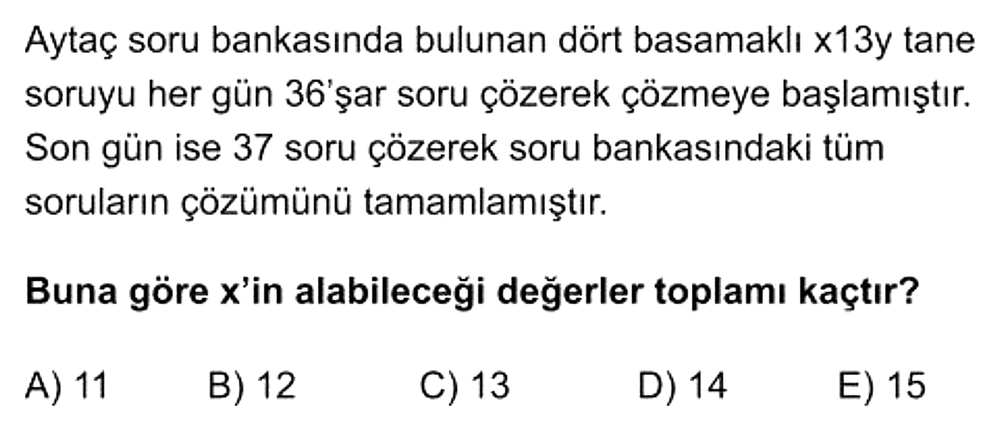
Çözüm
- Günde 36, son gün 37 → toplam $36k+1$ → 36 ile kalan 1.
- 4: $\overline{3y}\equiv1 \Rightarrow y\in\{3,7\}$; 9: $x+4+y\equiv1 \Rightarrow x+y\equiv6$.
- $y=3 \Rightarrow x=3$; $y=7 \Rightarrow x=8$ → $11$ → A.
Cevap: A
Soru 19Cevap: D
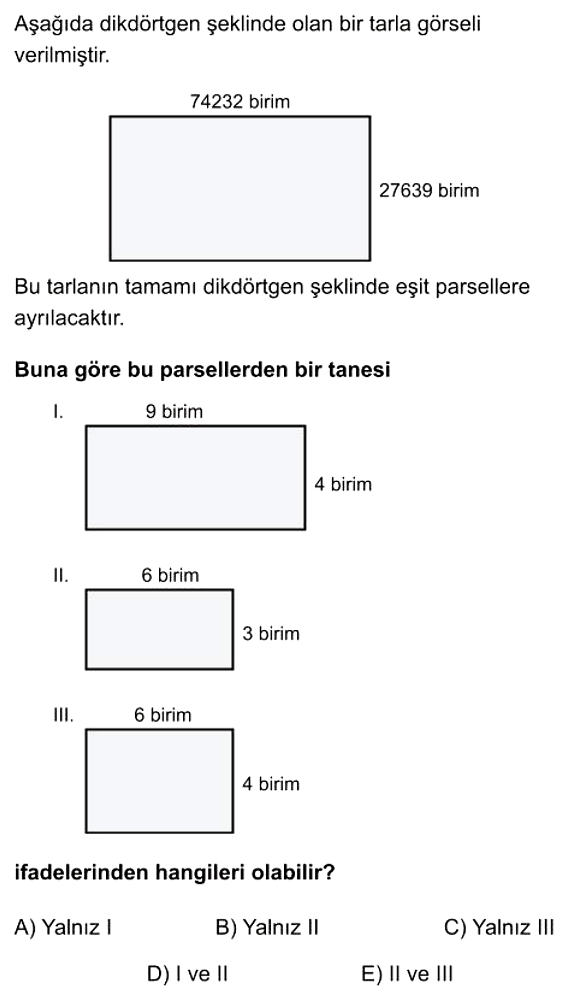
Çözüm
- $74232$: 2, 3, 4, 9 ile bölünür; $27639$: tek, 3 ve 9 ile bölünür.
- I: 4 ve 9 kenarlar sırasıyla bölünür ✓; II: 6 ve 3 ✓.
- III: 4 ya da 6, 27639'u bölmez ✗ → I ve II → D.
Cevap: D
Soru 20Cevap: A
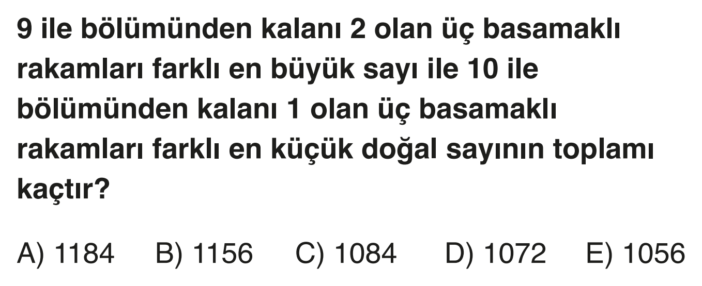
Çözüm
- 9 ile kalan 2, rakamları farklı en büyük üç basamaklı: $983$ ($20\to2$).
- 10 ile kalan 1, rakamları farklı en küçük üç basamaklı: $201$.
- $983+201=1184$ → A.
Cevap: A
Soru 21Cevap: D
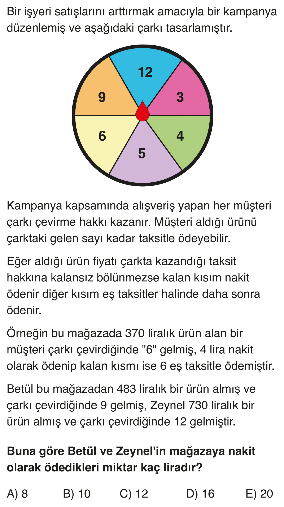
Çözüm
- Nakit = fiyatın taksit sayısına bölümünden kalan.
- Betül: $483$, 9 ile kalan $15\to6$; Zeynel: $730=12\cdot60+10$.
- $6+10=16$ → D.
Cevap: D
Soru 22Cevap: B
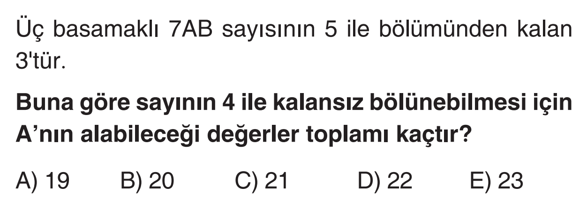
Çözüm
- 5 ile kalan 3 → $B\in\{3,8\}$; 4 ile bölünme → çift → $B=8$.
- $\overline{A8}$ 4'ün katı → $A$ çift.
- $0+2+4+6+8=20$ → B.
Cevap: B
Soru 23Cevap: E
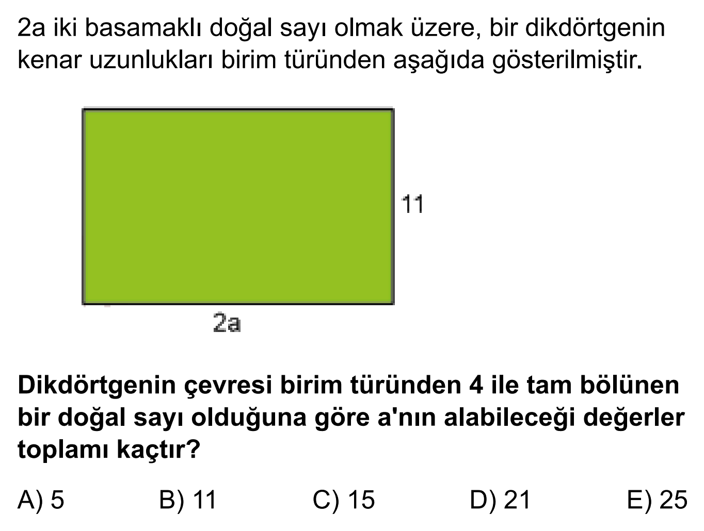
Çözüm
- Çevre $2(\overline{2a}+11)=2(31+a)$.
- 4'e bölünmesi için $31+a$ çift → $a$ tek.
- $1+3+5+7+9=25$ → E.
Cevap: E
Soru 24Cevap: D
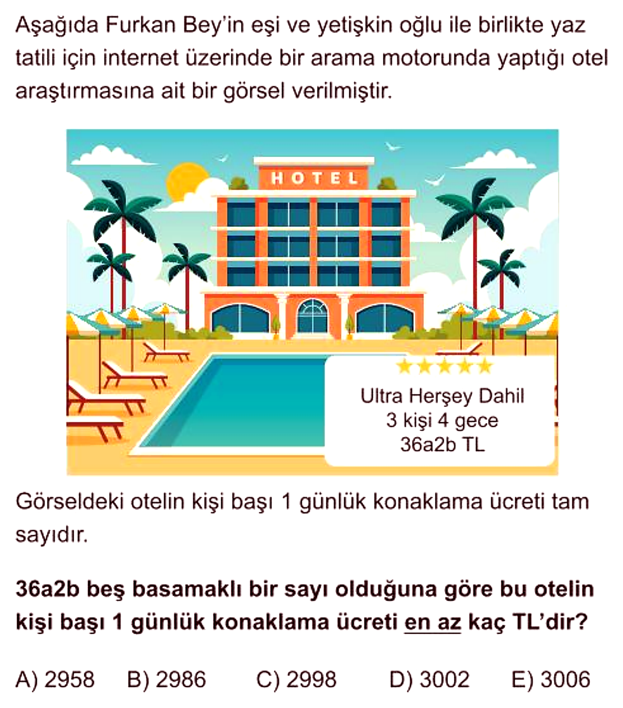
Çözüm
- 3 kişi × 4 gece → $\overline{36a2b}$ 12 ile bölünür.
- 4: $\overline{2b}\Rightarrow b\in\{0,4,8\}$; 3: $11+a+b$ 3'ün katı → en küçük $36024$.
- $\frac{36024}{12}=3002$ TL → D.
Cevap: D
Soru 25Cevap: E
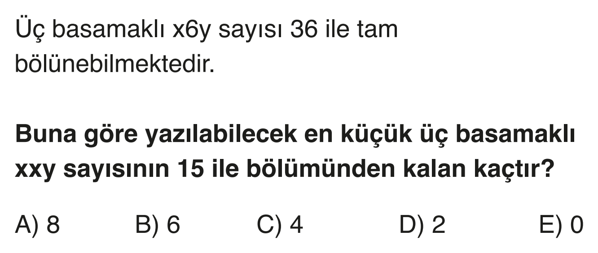
Çözüm
- $\overline{x6y}$ 36 ile → $y\in\{0,4,8\}$ ve $x+6+y$ 9'un katı: $360$, $864$, $468$.
- $\overline{xxy}$: $330$, $884$, $448$ → en küçük $330$.
- $330$, 15'e tam bölünür → kalan 0 → E.
Cevap: E
Soru 26Cevap: B
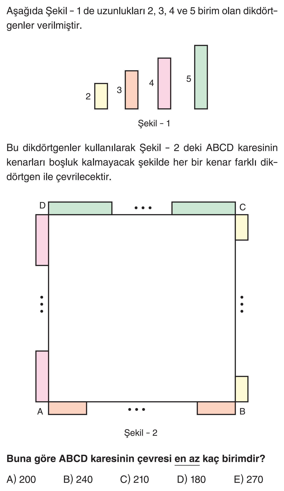
Çözüm
- Her kenar tek tür dikdörtgenle kaplanır ve dört tür de kullanılır → kenar 2, 3, 4, 5'in ortak katı.
- En küçük $\text{EKOK}(2,3,4,5)=60$.
- Çevre $240$ → B.
Cevap: B
Soru 27Cevap: C
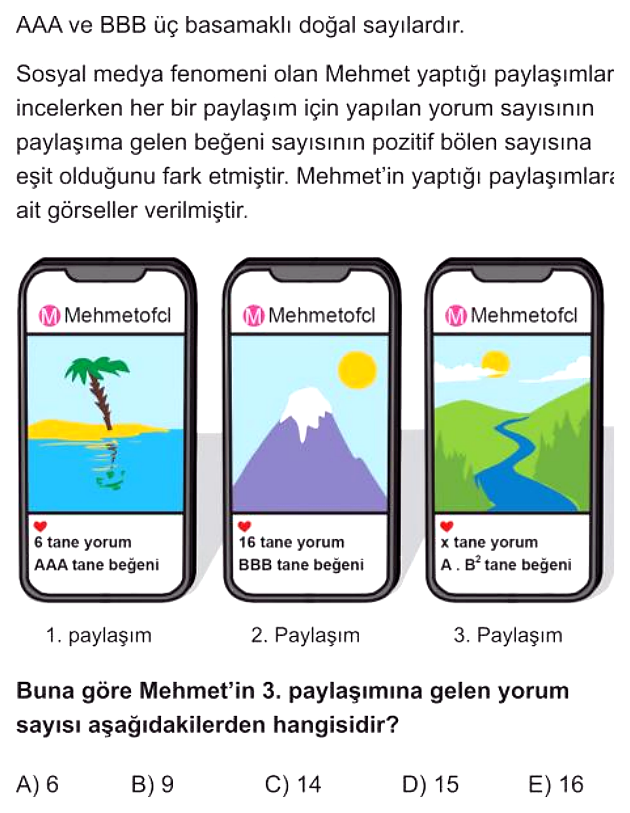
Çözüm
- Yorum sayısı = beğeni sayısının pozitif bölen sayısı. $\overline{AAA}=111A=3\cdot37\cdot A$; 6 bölen için $A=3$ ($3^2\cdot37$).
- $\overline{BBB}=3\cdot37\cdot B$; 16 bölen için $B=8$ ($2^3\cdot3\cdot37$).
- $A\cdot B^2=192=2^6\cdot3$ → $7\cdot2=14$ yorum → C.
Cevap: C
Soru 28Cevap: A
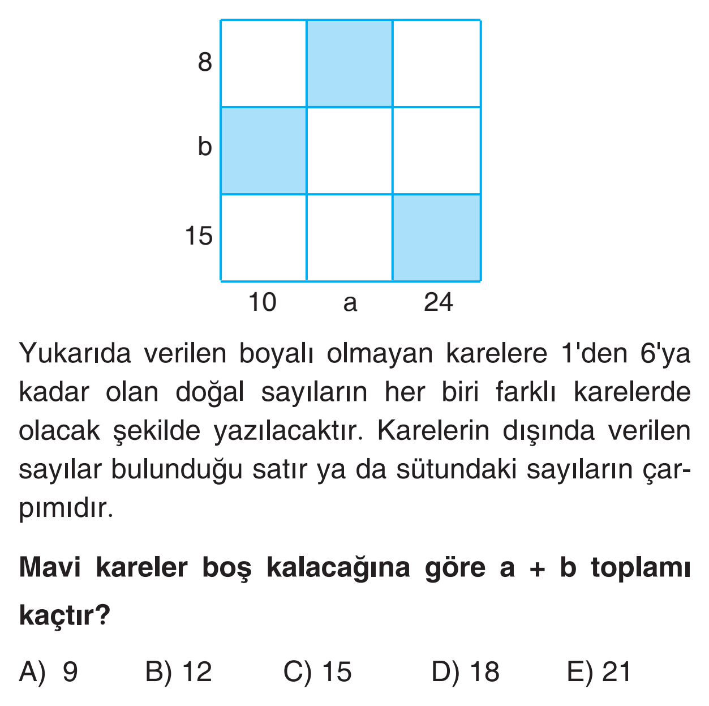
Çözüm
- 1. satır çarpımı 8: $\{2,4\}$; 3. satır 15: $\{3,5\}$; 3. sütun 24: $4\cdot6$ → 1. satır $2,\_,4$, 2. satır 3. sütun $6$.
- 1. sütun 10: $2\cdot5$ → 3. satır $5,3$; kalan sayı 1 ortada.
- $b=1\cdot6=6$, $a=1\cdot3=3$ → $9$ → A.
Cevap: A
Soru 29Cevap: C
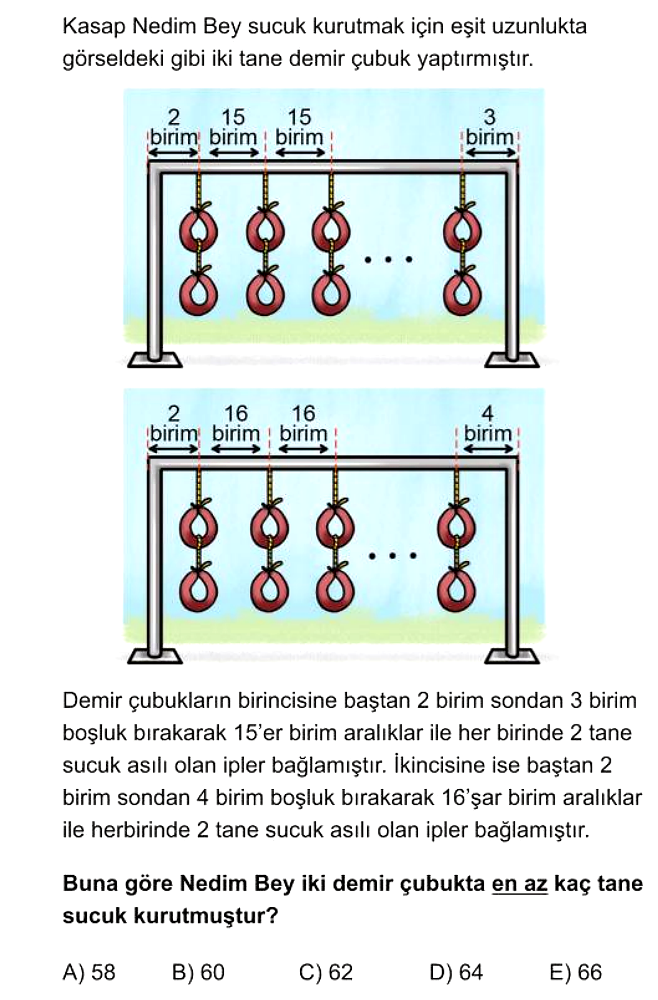
Çözüm
- Uzunluk $L=5+15m=6+16n$ → $L\equiv5 \pmod{15}$, $L\equiv6 \pmod{16}$.
- En küçük $L=230$: 1. çubukta $\frac{225}{15}+1=16$, 2. çubukta $\frac{224}{16}+1=15$ ip.
- $31$ ip $\cdot2=62$ sucuk → C.
Cevap: C
Soru 30Cevap: E
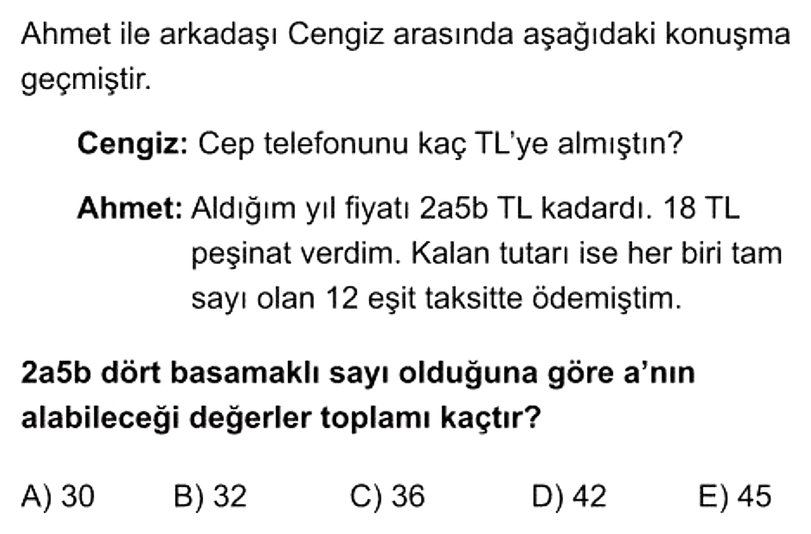
Çözüm
- $\overline{2a5b}-18$, 12'nin katı → $\overline{2a5b}\equiv6 \pmod{12}$: 4 ile kalan 2, 3 ile kalan 0.
- $\overline{5b}\equiv2 \pmod 4 \Rightarrow b\in\{0,4,8\}$; $a+b\equiv2 \pmod 3$.
- Her $a$ için uygun bir $b$ var: $0+1+\ldots+9=45$ → E.
Cevap: E